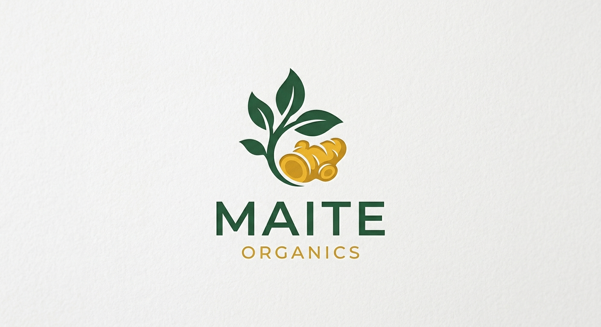
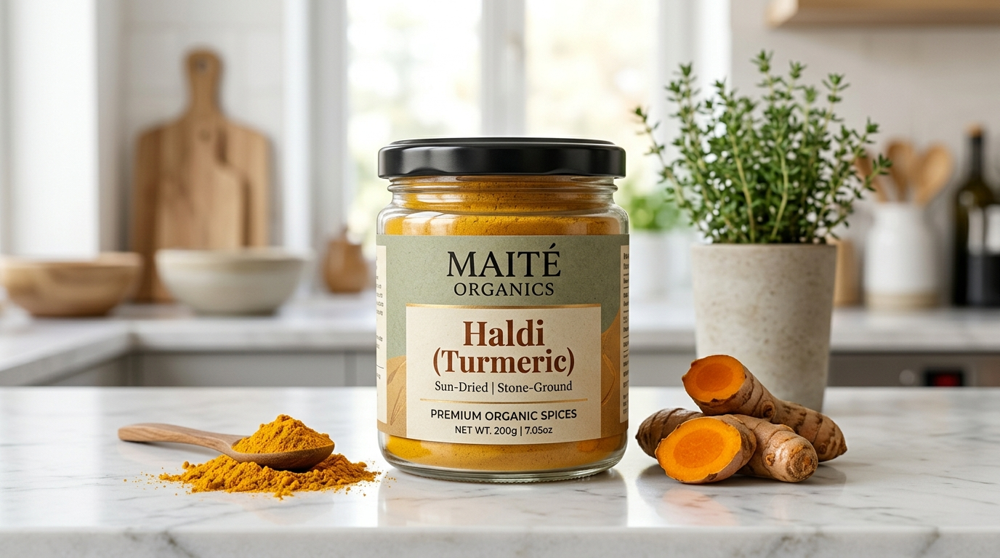
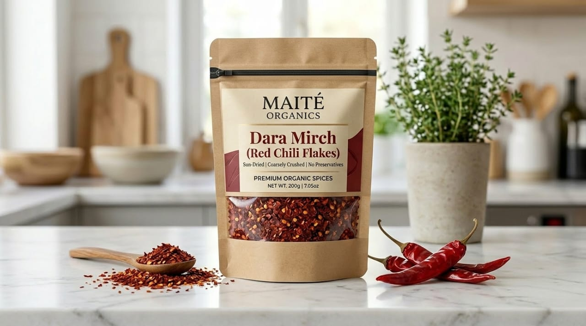

Pure • Home‑Made • Organic

Rs 600 (250g) | Rs 1100 (500g)
MAITE Organics ki haldi ghar par natural tareeqay se tayar ki jati hai. Koi chemicals, colors ya preservatives shamil nahi kiye jate.
🔔 Advance payment only
🚚 Delivery charges customer pay karega
“Haldi ki quality bohat hi achi hai, bilkul ghar jesi pisi hui.”
— Ayesha K.
“Rang aur fragrance zabardast hai. Dobara zaroor order dunga.”
— Imran R.

Rs 650 (250g) | Rs 1200 (500g)
MAITE Organics ki dara mirch ghar par natural tareeqay se pisi jati hai. Rang tez, taste zabardast aur bilkul chemical‑free.
🔔 Advance payment only
🚚 Delivery charges customer pay karega
“Mirch ka rang aur taste dono strong hain, bohat kamal.”
— Sana M.
“Bilkul chemical‑free lagti hai. Highly recommended.”
— Farhan A.
InshaAllah bohat jald pisi mirch, dhania aur doosray organic products bhi available hon ge.